Erste Schritte mit dem Add-On für die elektronische Rechnungsstellung für Italien
Important
Dynamics 365 for Finance and Operations hat sich zu speziell entwickelten Anwendungen entwickelt, mit denen Sie bestimmte Geschäftsfunktionen verwalten können. Weitere Informationen zu diesen Änderungen finden Sie im Dynamics 365-Lizenzierungshandbuch.
Important
Das Add-On für die elektronische Rechnungsstellung für Italien unterstützt derzeit möglicherweise nicht alle Funktionen, die für elektronische Rechnungen in Microsoft Dynamics 365 Finance und Dynamics 365 Supply Chain Management verfügbar sind.
Dieses Thema enthält Informationen, die Ihnen den Einstieg in das Add-On für die elektronische Rechnungsstellung für Italien erleichtern. Es führt Sie durch die Konfigurationsschritte, die in Regulatory Configuration Services (RCS) sowie in Finance länderabhängig sind. Es führt Sie auch durch den Übermittlungsprozess für elektronische Rechnungen, die über den Service im für Italien spezifischen Format FatturaPA erstellt werden, und es wird erläutert, wie die Ergebnisse der Verarbeitung überprüft werden.
Voraussetzungen
Bevor Sie die Schritte in diesem Thema ausführen, müssen Sie die Schritte in Erste Schritte mit dem Add-On für die elektronische Rechnungsstellung ausführen.
RCS-Einstellungen
Während der RCS-Einrichtung führen Sie folgende Aufgaben aus:
- Importieren Sie die Funktion für die elektronische Rechnungsstellung für den Export elektronischer Kundenrechnungen im Format FatturaPA.
- Überprüfen Sie die Formatkonfigurationen, die zum Generieren, Übermitteln und Empfangen von Antworten zu elektronischen Rechnungen erforderlich sind.
- Konfigurieren Sie die Ereignisse, die die Szenarien für die elektronische Rechnungsübermittlung unterstützen.
- Veröffentlichen Sie die Funktion für die elektronische Rechnungsstellung.
Note
„Die Funktion für die elektronische Rechnungsstellung“ ist der generische Name für die Ressource, die so konfiguriert und veröffentlicht ist, dass sie den Add-On-Server für die elektronische Rechnungsstellung verwendet. In diesem Fall ist der Export elektronischer Kundenrechnungen die Funktion für die elektronische Rechnungsstellung, die Sie einrichten werden.
Importieren der Funktion für die elektronische Rechnungsstellung
Melden Sie sich bei Ihrem RCS-Konto an.
Wählen Sie im Arbeitsbereich Globalisierungsfunktionen im Abschnitt Funktionen die Kachel Elektronische Rechnungsstellung aus.
Wählen Sie auf der Seite Funktionen für die elektronische Rechnungsstellung die Option Importieren aus, um die Funktion für die elektronische Rechnungsstellung aus dem globalen Repository zu importieren.
Note
Wenn die Liste der verfügbaren Funktionen nicht angezeigt wird, wählen Sie Synchronisieren aus.
Wählen Sie die Funktion Elektronische Rechnungen exportieren (IT) aus und wählen Sie dann Importieren aus.
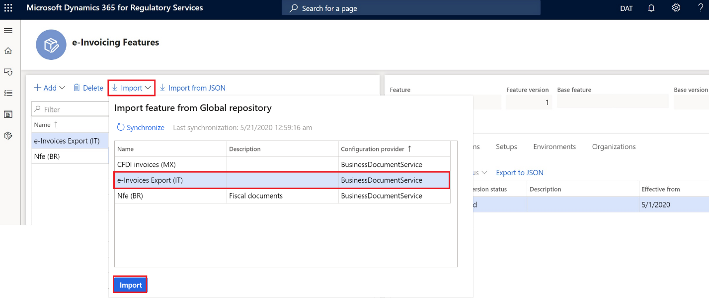
Wenn Sie die Funtion Elektronische Rechnungen exportieren (IT) aus dem globalen Repository importieren, werden auch alle Einstellungen importiert, die in den nächsten Abschnitten beschrieben werden.
Erstellen einer neuen Version der Funktion „Elektronische Rechnungen exportieren (IT)“
Wählen Sie auf der Seite Funktionen für die elektronische Rechnungsstellung auf der Registerkarte Versionen die Option Neu aus.
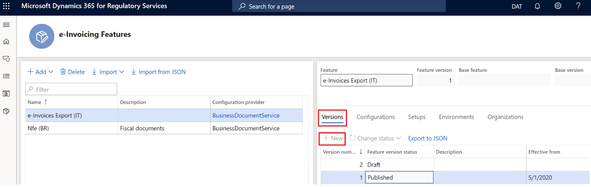
Als Nächstes konfigurieren Sie die EB-Formate (Elektronische Berichterstellung), die der Funktion für die elektronische Rechnungsstellung zugeordnet sind.
Wählen Sie auf der Registerkarte Konfigurationen die Option Hinzufügen aus, um die Konfigurationsversionen zu verwalten.
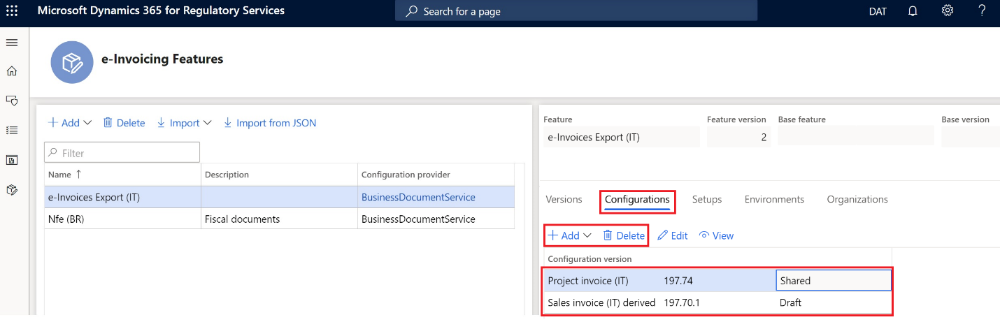
In diesem Schritt fügen Sie die EB-Formate verschiedener Dateien hinzu, die zum Exportieren elektronischer Rechnungen in Italien verwendet werden, und konfigurieren sie. Verwenden Sie in Italien für elektronische Rechnungen im FatturaPA-Format entweder die folgenden Standardkonfigurationen oder die tatsächlich angepassten Konfigurationen, die Sie für die elektronische Rechnungsstellung verwenden:
- Verkaufsrechnung (IT)
- Projektrechnung (IT)
Wenn Sie eine Funktion für die elektronische Rechnungsstellung erstellen, die von einer anderen Funktion für die elektronische Rechnungsstellung abgeleitet ist, werden alle EB-Formate von der ursprünglichen Funktion geerbt.
Wählen Sie eine bestimmte Dateikonfiguration im ER-Format aus.
Wählen Sie Bearbeiten oder Anzeigen aus, um die Seite Formatdesigner zu öffnen.
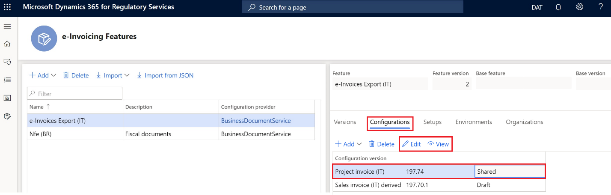
Verwenden Sie die Seite Formatdesigner, um die EB-Formatkonfigurationen für Dateien zu bearbeiten und anzuzeigen.
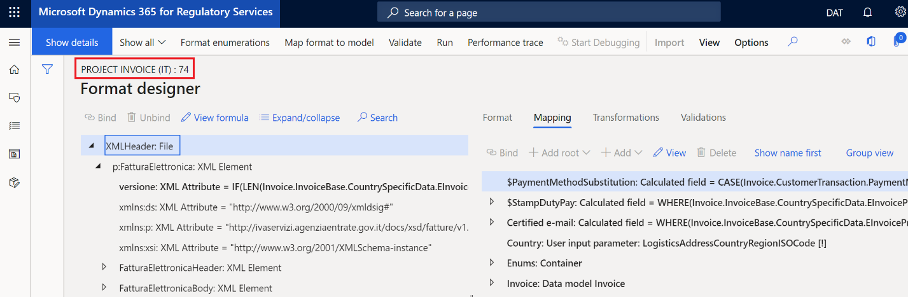
Verwalten der Einrichtungen der Funktion für die elektronische Rechnungsstellung
- Wählen Sie auf der Seite Funktionen für die elektronische Rechnungsstellung auf der Registerkarte Einrichtungen entweder Hinzufügen, Löschen oder Bearbeiten aus, um die Einrichtungen der Funktion für die elektronische Rechnungsstellung zu verwalten.
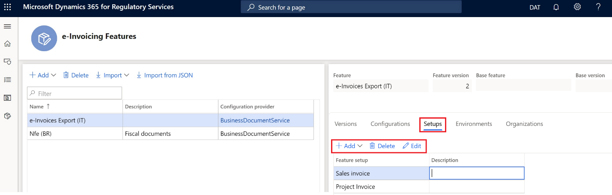
In diesem Schritt konfigurieren Sie die Ereignisse, die für elektronische Rechnungen gelten, einschließlich der Generierung der XML-Ausgabedateien im Format FatturaPA und digitaler Signaturen (falls erforderlich).
Konfigurieren der Funktionseinrichtung „Verkaufsrechnung“
Wählen Sie auf der Seite Funktionen für die elektronische Rechnungsstellung auf der Registerkarte Einrichtungen in der Spalte Funktionseinrichtung die Option Verkaufsrechnung aus.
Wählen Sie Bearbeiten aus.
Wählen Sie auf der Seite Einrichtung der Funktionsversion die Registerkarte Aktionen aus, um die Liste der Aktionen zu verwalten. Aktionen definieren eine Liste von Vorgängen, die nacheinander ausgeführt werden müssen, um die vollständige Ausführung des Ereignisses zu erreichen.
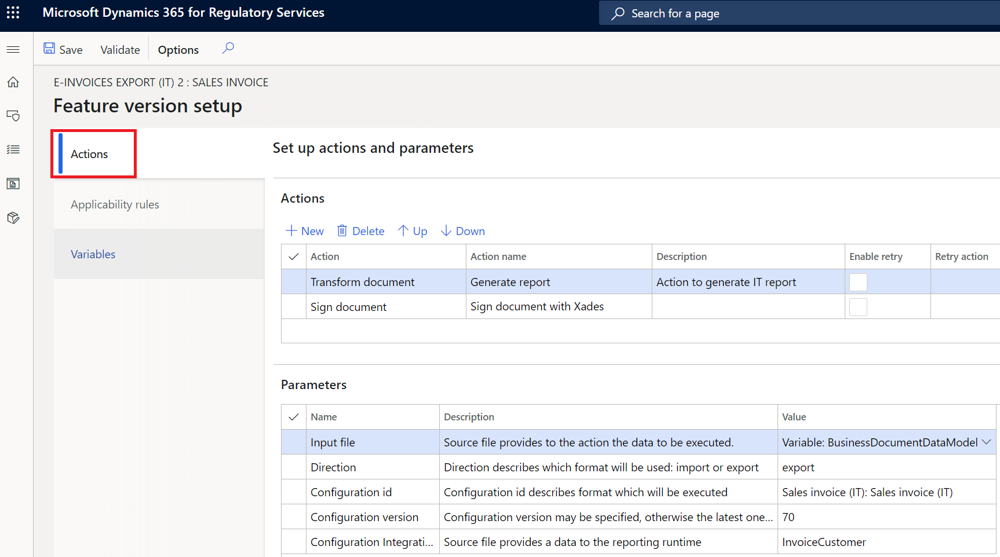
Aktivitätskennung Aktivitätsname Aktivitätsbeschreibung 1 Umwandeln des Dokuments Erstellen Sie die XML-Datei der elektronischen Rechnung im Format FatturaPA. 2 Dokument signieren Wenden Sie die digitale Signatur auf die XML-Datei an. Wählen Sie die Registerkarte Anwendbarkeitsregeln aus, um die Anwendbarkeitsregeln anzuzeigen und zu verwalten. Anwendbarkeitsregeln definieren den Kontext, in dem die Aktion ausgeführt wird.
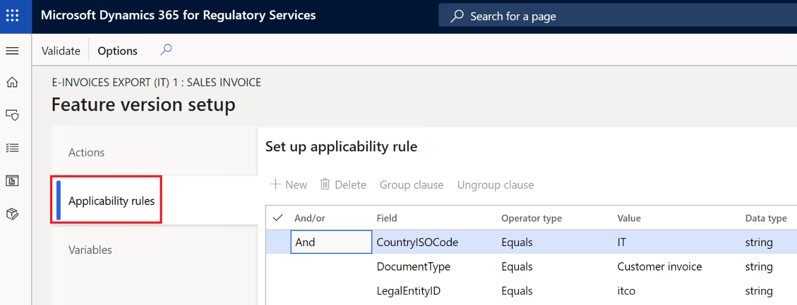
Wählen Sie die Registerkarte Variablen aus, um die Variablen anzuzeigen und zu verwalten.
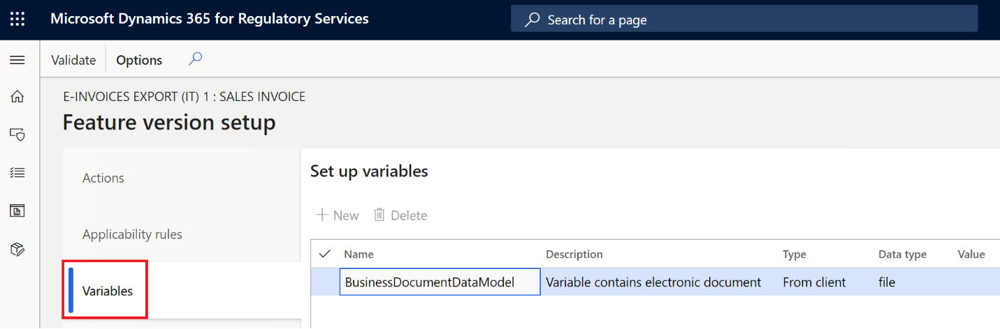
Definieren Sie die öffentlichen Variablen, die zum Ausführen der Aktionen erforderlich sind.
Konfigurieren der Funktionseinrichtung „Projektrechnung“
Die Schritte und Einstellungen, die zum Konfigurieren der Funktionseinrichtung Projektrechnung erforderlich sind, sind den Schritten und Einstellungen für die Funktionseinrichtung Verkaufsrechnung sehr ähnlich. Wenn Sie mit Projektrechnungen arbeiten, lesen Sie die Prozeduren für Verkaufsrechnungen.
Zuweisen der Funktion für die elektronische Rechnungsstellung zur Umgebung
- Wählen Sie auf der Seite Funktionen für die elektronische Rechnungsstellung auf der Registerkarte Umgebungen die Option Aktivieren aus.
- Wählen Sie im Feld Umgebung die Umgebung aus.
- Wählen Sie im Feld Gültig ab das Datum aus, an dem die Umgebung wirksam werden soll.
- Wählen Sie Aktivieren aus.
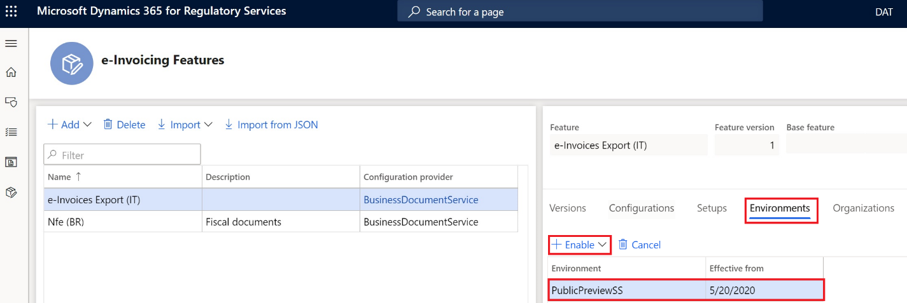
Veröffentlichen der Funktion für die elektronische Rechnungsstellung
Sie können die Funktion für die elektronische Rechnungsstellung veröffentlichen, indem Sie den Versionsstatus in Abgeschlossen oder Veröffentlicht ändern.
Ändern des Versionsstatus in „Abgeschlossen“
- Wählen Sie auf der Seite Funktionen für die elektronische Rechnungsstellung auf der Registerkarte Versionen die Version der Funktion für die elektronische Rechnungsstellung mit dem Status Entwurf aus.
- Wählen Sie Status ändern >Abschließen aus.
Ändern des Versionsstatus in „Veröffentlicht“
- Wählen Sie auf der Seite Funktionen für die elektronische Rechnungsstellung auf der Registerkarte Versionen die Version der Funktion für die elektronische Rechnungsstellung mit dem Status Abgeschlossen aus.
- Wählen Sie Status ändern > Veröffentlichen aus.
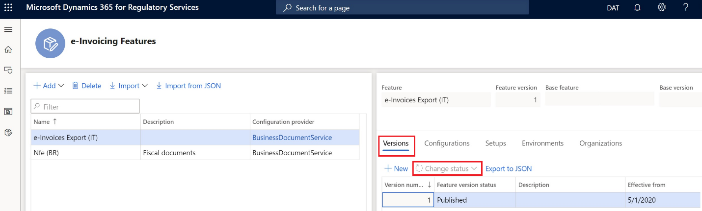
Einrichten der Integration des Add-Ons für die elektronische Rechnungsstellung in Finance
Während der Einrichtung von Finance führen Sie folgende Aufgaben aus:
- Importieren Sie das EB-Datenmodell, die EB-Datenmodellzuordnung und die Kontextkonfigurationen für elektronische Rechnungen im FatturaPA-Format.
- Konfigurieren Sie das Zertifikat, das zum digitalen Signieren elektronischer Rechnungen in Italien erforderlich ist.
Importieren des EB-Datenmodells, der Datenmodellzuordnung und der Formate
- Überprüfen Sie im Arbeitsbereich Elektronische Berichterstellung, ob der Konfigurationsanbieter Geschäftsdokumentservice auf Aktiv festgelegt ist.
- Wählen Sie Repositorys aus.
- Wählen Sie Globale Ressource > Öffnen aus.
- Importieren Sie Rechnungsmodell, Rechnungsmodellzuordnung und Kontextmodell Debitorenrechnung.
Aktivieren der Funktion zum Exportieren von elektronischen Kundenrechnungen für Italien
- Navigieren Sie zu Organisationsverwaltung > Einrichtung > Parameter elektronischer Dokumente.
- Aktivieren Sie auf der Registerkarte Funktionen das Kontrollkästchen Aktivieren in der Zeile für Funktionsreferenz IT00036.
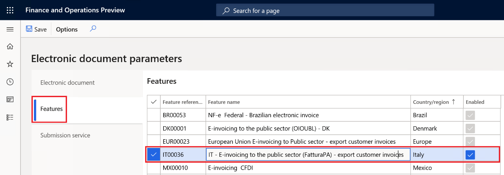
Konfigurieren elektronischer Dokumente
Navigieren Sie zu Organisationsverwaltung > Einrichtung > Parameter elektronischer Dokumente.
Wählen Sie auf der Registerkarte Elektronisches Dokument die Option Hinzufügen aus und geben Sie die Tabellen ein, die zum Generieren elektronischer Rechnungen in Italien erforderlich sind:
- Tabellenname: Debitorenrechnungserfassung
- Tabellenname: Projektrechnung
Definieren Sie für jede Tabelle einen zugehörigen Dokumentkontext:
- Wählen Sie für Debitorenrechnungserfassung die Option Kontext Debitorenrechnung aus.
- Wählen Sie für Projektrechnung die Option Kontext Projektrechnung aus.
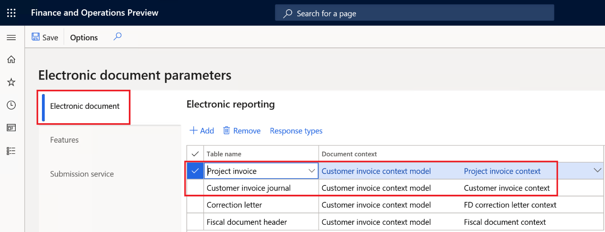
Verarbeitung der elektronischen Rechnung
Während der Verarbeitung in Finance führen Sie folgende Aufgaben aus:
- Generieren elektronischer Rechnungen in Italien über das Add-On für die elektronische Rechnungsstellung
- Anzeigen der Ausführungsprotokolle und Überprüfen der Ergebnisse der Verarbeitung
Generieren elektronischer Rechnungen
Nachdem Sie die Funktion Integration des konfigurierbaren Add-Ons für die elektronische Rechnungsstellung und die Funktion IT00036 aktiviert haben, kann der alte Prozess von Finance zum Generieren elektronischer Rechnungen in Italien nicht mehr verwendet werden. Er wird durch einen neuen Prozess mit dem Namen Elektronische Dokumente übermitteln ersetzt.
Sie können die Dokumente manuell übermitteln, basierend auf Ihrer Nachfrage nach elektronischen Rechnungsdokumenten.
Note
Bevor Sie fortfahren, stellen Sie sicher, dass die für elektronische Rechnungen in Italien erforderliche Einrichtung abgeschlossen wurde. Weitere Informationen finden Sie unter Elektronische Rechnungen für Kunden. Beachten Sie, dass einige der in diesem Thema beschriebenen Einrichtungsschritte aufgrund der Aktivierung des Add-Ons für die elektronische Rechnungsstellung möglicherweise nicht verfügbar sind.
- Navigieren Sie zu Organisationsverwaltung > Periodisch > Elektronische Dokumente > Elektronische Dokumente übermitteln.
- Legen Sie für die erste Übermittlung irgendeines Dokuments die Option Dokumente erneut übermitteln auf Nein fest. Wenn Sie ein Dokument erneut über den Service übermitteln müssen, legen Sie diese Option auf Ja fest.
- Wählen Sie auf dem Inforegister Einzuschließende Datensätze die Option Filtern aus, um das Dialogfeld Anfrage zu öffnen, in dem Sie eine Abfrage erstellen können, um Dokumente für die Übermittlung auszuwählen.
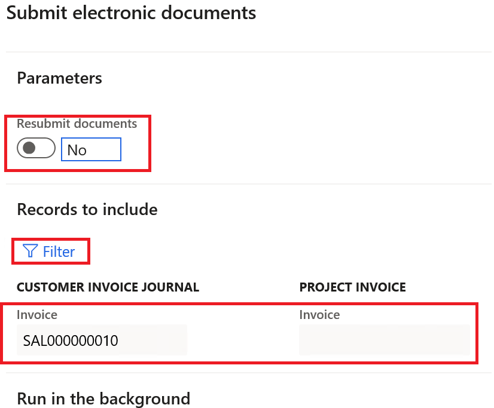
Filterabfrage
Konfigurieren Sie im Dialogfeld Anfrage die Filterbedingungen für Verkaufs- und Projektrechnungen oder lassen Sie die Bedingungen leer, um alle nicht übermittelten Rechnungen einzuschließen.
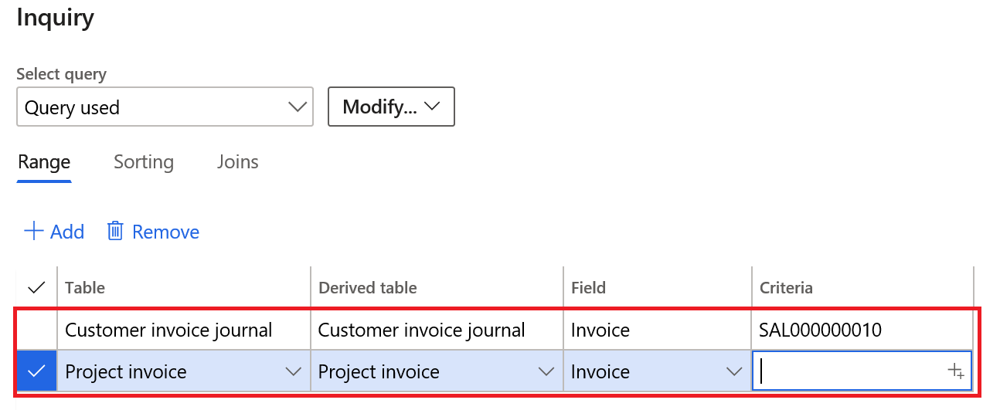
Wählen Sie OK aus, um das Dialogfeld Anfrage zu schließen.
Wählen Sie OK aus, um die ausgewählten Dokumente zu übermitteln.
![HINWEIS] Bei Ihrem ersten Versuch, ein Dokument über den Service zu übermitteln, werden Sie aufgefordert, die Verbindung mit dem Add-On für die elektronische Rechnungsstellung zu bestätigen. Wählen Sie Hier klicken, um eine Verbindung mit dem Electronic Document Submission Service herzustellen aus.
Anzeigen von Übermittlungsprotokollen
Sie können die Übermittlungsprotokolle für alle übermittelten Dokumente anzeigen.
Navigieren Sie zu Organisationsverwaltung > Periodisch > Elektronische Dokumente > Übermittlungsprotokoll für elektronische Dokumente.
Wählen Sie im Feld Dokumenttyp entweder Debitorenrechnungserfassung oder Projektrechnung aus, um nach den erforderlichen elektronischen Dokumenten zu filtern.
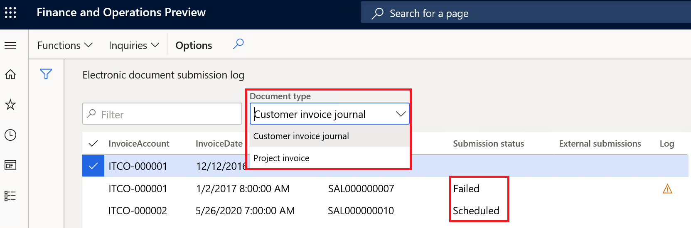
Der Wert, der in der Spalte Übermittlungsstatus angezeigt wird, gibt den Status des Übermittlungsprozesses an. Er zeigt an, ob der Prozess wie konfiguriert ausgeführt wurde und ob zusätzliche Aktionen erforderlich sind.
Wählen Sie im Aktivitätsbereich die Option Anfragen > Übermittlungsdetails aus, um die Details der Ausführungsprotokolle für die Übermittlung anzuzeigen.
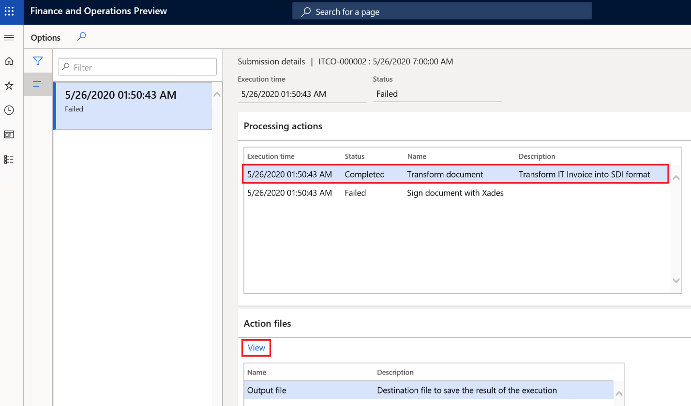
Auf dem Inforegister Verarbeitungsaktivitäten können Sie das Ausführungsprotokoll für die Aktionen anzeigen, die in der in RCS eingerichteten Funktionsversion konfiguriert sind. Die Spalte Status zeigt an, ob die Aktion erfolgreich ausgeführt wurde.
Auf dem Inforegister Aktionsdateien können Sie die Zwischendateien anzeigen, die während der Ausführung der Aktionen generiert wurden. Sie können Anzeigen auswählen, um die ausgegebene-XML-Datei im Format FatturaPA herunterzuladen und ihren Inhalt anzuzeigen.